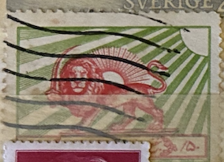
| SOURCE | TITLE| IMAGE MATCH | click to source page |
| HipStamp | Iran - #RA1 Iranian Red Cross - Used | Middle East - Iran, Revenues - Postal Tax Stamp / HipStamp | 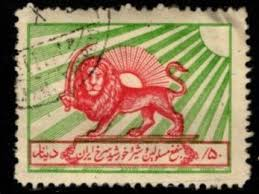 |
| HipStamp | Iran #RA1 Used; 50d Iranian Red Cross Lion & Sun Emblem - Perf 11 (1950) | Middle East - Iran, Revenues - Postal Tax Stamp / HipStamp |  |
| دينل /۵۵ SNSINEES |  | |
| Post # 223 The Red Lion and Sun became a popular symbol in Persia (Iran) since the 12th century and was based mainly on astronomical and astrological configurations as also the ancient | 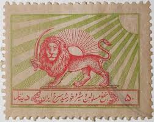 | |
| Shutterstock | Photo de stock Iran - vers 1955 : Timbre-poste 2353114685 | Shutterstock | 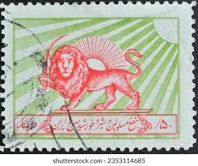 |
| HipStamp | Iran 1950 Scott RA1 used - 50d, Emblem of the Red Lion and Sun Society | Middle East - Iran, Revenues - Postal Tax Stamp / HipStamp | 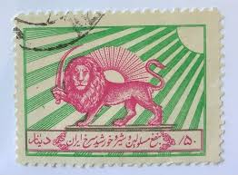 |
| eBay | Middle East 1963 Used Red Lion Tuberculosis Aid Michel Z17 Scott RA6 Crease 4424 | eBay | 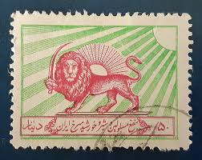 |
| HipStamp | Iran #RA6 Used VLH ; 50d Iranian Red Cross Lion & Sun Emblem - Perf 10.5 (1965) | Middle East - Iran, Revenues - Postal Tax Stamp / HipStamp | 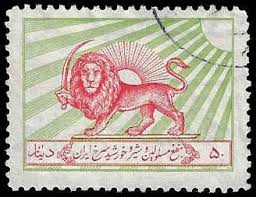 |
| philatelyclub.com | Iran Scott Ra1 Postal Tax Stamp, Iranian Red Cross Lion And Sun Emblem, 1950 |  |
| iStock | Iraq Postage Stamps Stock Photo - Download Image Now - Iraq, Single Object, Above - iStock |  |
| Fine Art America | Pahlavi Dynasty Jigsaw Puzzles for Sale - Fine Art America | 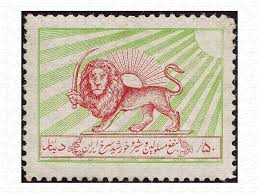 |
| Sorting my grandfather stamps, have alot where I do not know the country orgin, is there a website that I can do some sort of backwards image search? Google dosnt seem to | 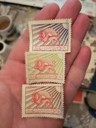 | |
| Very rare 1955 50 dinar Charity stamp (Shir v Khorshid) with Watermark 2 Farahbakhsh: C15 Wmk 2 , Scott RA3 Wmk 316 |  | |
| telstamps.org.uk | Iranian Telegraph Stamps. | 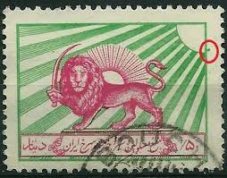 |
| iStock | Persian Stamp Stock Photo - Download Image Now - Postage Stamp, Iran, Lion - Feline - iStock | 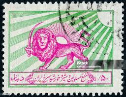 |
| Ars Technica | How the Comodo certificate fraud calls CA trust into question - Ars Technica | 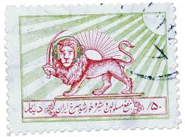 |
| Flickr | Richard Wanderman | Flickr | 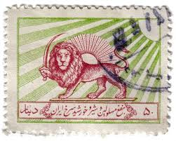 |
| X | انقلاب_شیروخورشید | 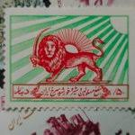 |
| CollectorBazar | IRAN 1955 POSTAL TAX HOSPITALS FUND (RED CROSS LION AND SUN EMBLEM) USED STAMP | 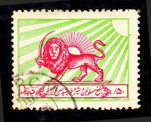 |
| Colnect | Stamp: Emblem of the Red Lion and Sun Society (Iran(Red Lion and Sun Society and Tuberculosis Aid) Yt:IR B14A,Bar:IR T7,Far:IR C31 📮 | 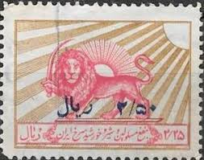 |
| Dreamstime.com | Emblem of the Red Lion and Sun Society Editorial Photography - Image of lion, drawing: 293982492 | 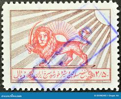 |
| eBay | Middle East 1963 Used Red Lion Tuberculosis Aid Yvert et Tellier B19 VF/XF 4425 | eBay | 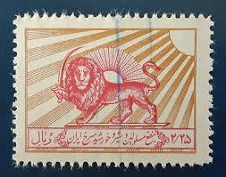 |
| Stamp Auction Network | Shreves Philatelic Galleries, Inc. Sale - 52 Page 9 | 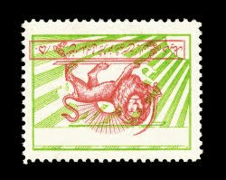 |
| Colnect | Stamp: Emblem of the Red Lion and Sun Society (Iran(Red Lion and Sun Society and Tuberculosis Aid) Mi:IR Z21,Sn:IR RA10,Yt:IR B20,Sg:IR T2007,Far:IR C20 📮 | 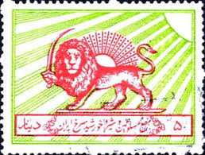 |
| WordPress.com | Illustrated Identifier | 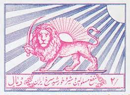 |
| Redbubble | Persian stamp - Persian (iran) art" Poster by Elbenj | Redbubble | 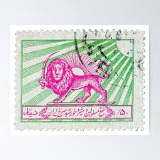 |
| Germany stamp 1949.For sale. BERLIN-TEMPELHOF FLUGHAFEN ยง DEVISCHEDOST АЫЛНЗИ DEGISCHE SOST 1M DM อาบบต |  | |
| Iran Philatelic Study Circle | Red Lion & Sun Postal Tax Stamps of Iran — Iran Philatelic Study Circle | 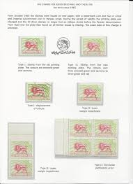 |
| Dreamstime.com | 1,465 Iran Emblem Stock Photos - Free & Royalty-Free Stock Photos from Dreamstime | 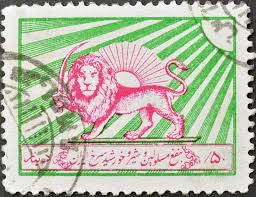 |
| Shutterstock | 9 Red Lion Sun Society Royalty-Free Images, Stock Photos & Pictures | Shutterstock | 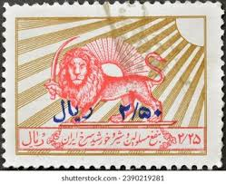 |
| Alamy | Lion and Sun, postage stamp, Iran, 1950 Stock Photo - Alamy | 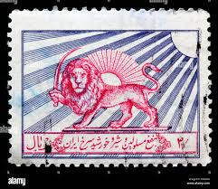 |
| 123RF | Iranian Stamp Stock Photos and Images - 123RF | 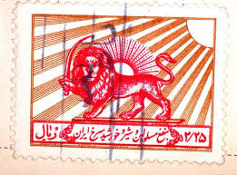 |
| ProBoards | Postmark Calendar | The Stamp Forum (TSF) | 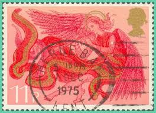 |
| Iran Philatelic Study Circle | Compulsory Tax Stamps Red Lion and Sun Iran — Iran Philatelic Study Circle | 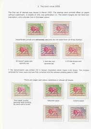 |
| Unknown > English] Red character : r/translator | 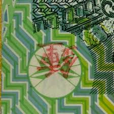 | |
| Eskenas Iran🇮🇷🇺🇸 (@eskenas_iran) · Los Angeles, California · Instagram photos and videos |  | |
| 45 تمبر ideas | stamp, persia, postage stamps | 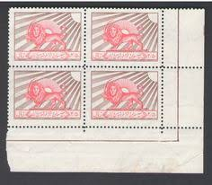 | |
| Anyone able to help with the Stanley gibbons number of this gwalior stamp last of my indian stamps can't find it in my catalogue. Many thanks | 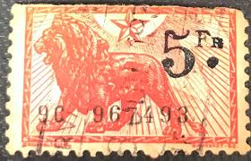 | |
| The devil is on the 50 euro bill. : r/romemes | 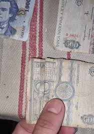 | |
| eBay | Vintage Ethiopia 10 Dollar Banknote – Haile Selassie I & Lion of Judah, 1966 | eBay | 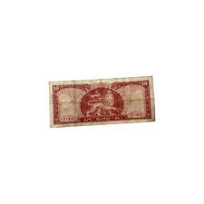 |
| PRINT Magazine | Setting Iran Aflame – PRINT Magazine |  |
| 37 تمبر ideas to save today | stamp, postage stamps, persia and more | 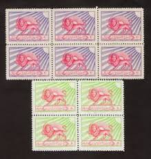 | |
| CSA Images | Coupon Illustrations | Unique Modern and Vintage Style Stock Illustrations for Licensing | CSA Images | 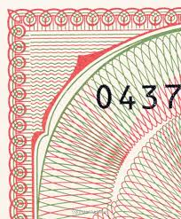 |
| Delcampe | Iran - Stamp Iran Persia 1870 8s mint lot6 | 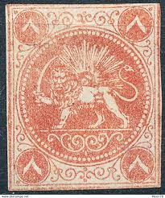 |
| 1100عدددتمبر شاهی باطله با یک البوم گالینگور قیمت6500میلیون | 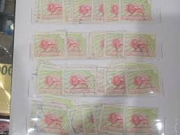 | |
| Stamp Auction Network | Cherrystone Auctions Sale - 0618 Page 28 | 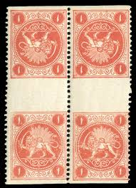 |
| Numista | Printing Types – Numista | 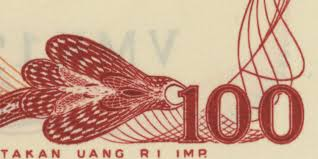 |
| Burda Auction | Persia / Iran / Far East and CIS / Asia / Philately / Public Auction | Burda Auction | 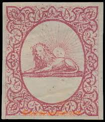 |
| fuchs-online.com | 1865, Barre Essay, Paris | 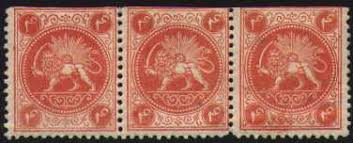 |
| eBay | Booklet lot Great Britain Prestige booket, UN World Heritage and small booklets | eBay | 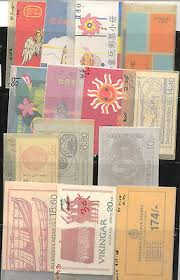 |
| riversidestamps.com | Suspect Scott #491 | 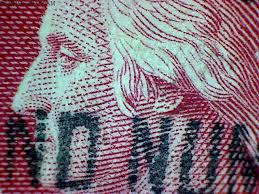 |
| eBay | Grade 64 Ethiopian Paper Money for sale | eBay | 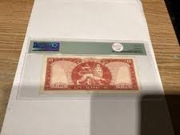 |
| Cedarstamps | Auction 37 | Cedarstamps Auction House | 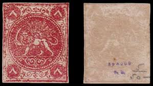 |
| Iran Philatelic Study Circle | 2022-10 — Iran Philatelic Study Circle | 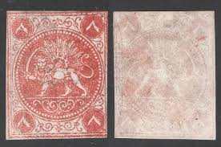 |
| Unknown stamps : r/stampcollecting | 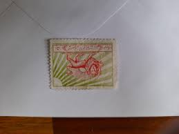 | |
| Cherrystone Auctions | U.S. and Worldwide Stamps & Postal History - December 4-5, 2018 - IRAN | 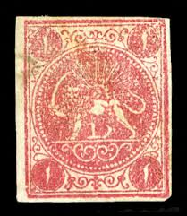 |
| zd-ins.co.il | Variety of stamps | 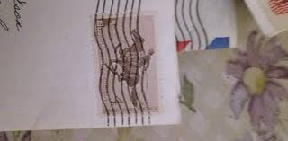 |
| Tambr.net | One Chahi Gray Black Laid Papar Veriety | |
| fuchs-online.com | 1868, The first Lions Stamps, the so-called "Bagheri Issue" | |
| eBay | GERMANY REICH MICHEL# KZ31 USED ZUSAMMENDRUCKE VF LOT# 75521 | eBay |